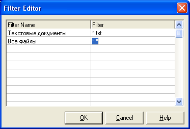

Диалоги (ч. 1)
Что такое диалоги в Delphi?
Это невизуальные, то есть, невидимые пользователю компоненты, которые выполняют стандартные для Windows диалоги пользователя и программы.
Например, диалог открытия или сохранения файла, диалог выбора шрифта или цвета, и т.п.
Любая серьезная программа содержит такие диалоги.
Работа с ними несложная, каждый диалог содержит буквально по два свойства, которые нам будут нужны.
Изучим работу диалогов на примере.
Открываем новый проект.
Сразу же форму переименовываем в fMain, в свойстве Caption пишем "Мой блокнот".
Сохраните проект под именем Editor.
Это будет более профессиональная версия редактора текстов, какой мы уже делали.
Считайте, что это вторая версия программы, что и напишете в окне fAbout.
Установите на форму компонент Memo, удалите весь текст из его свойства Lines.
Поверх Memo установите MainMenu и PopupMenu.
Перейдите на вкладку Dialogs в палитре компонентов, и также поверх Memo установите OpenDialog, SaveDialog, FontDialog и ColorDialog.
Все эти компоненты не визуальные, пользователь их видеть не сможет.
У Memo сразу же укажите свойство Align=alClient, а свойство ScrollBar=ssVertical.
Рекомендую для лучшего вида выбрать шрифт (свойство Font ) Times New Roman, а размер = 12.
На всех компьютерах с русской Windows есть этот шрифт, однако если вы будете писать программу для продажи в Интернет, лучше оставить шрифт по умолчанию, это гарантирует, что он будет читаться на всех компьютерах в мире.
Во всех диалогах есть один метод, который нас интересует – Execute.
Это метод логического типа, он возвращает True, если диалог с пользователем произошел успешно (например, пользователь выбрал открываемый файл), и False в противном случае (например, пользователь отказался от выбора файла).
В связи с этим, диалоги обычно применяют вместе с проверкой:
if OpenDialog1.Execute then...
В диалогах, связанных с файлами ( OpenDialog – открыть файл, и SaveDialog – сохранить файл), есть свойство FileName, которое возвращает строку – адрес и имя выбранного файла.
Вот, собственно, и все, что нам нужно от этих диалогов!
Диалог FontDialog в свойстве Font возвращает выбранный шрифт.
Это свойство непростое, оно имеет тип TFont, и присвоить его можно только другому шрифту, например:
Memo1.Font := FontDialog1.Font;
Точно также, диалог ColorDialog возвращает свойство Color – цвет, имеющее тип TColor, и это свойство можно присвоить только объекту, имеющему такой же тип:
Memo1.Color := ColorDialog1.Color;
Продолжим наш проект.
Откройте редактор главного меню.
Создайте раздел "Файл" и подразделы "Открыть", "Сохранить", "Закрыть", "-" и "Выход".
Создайте раздел "Параметры" и подразделы "Выбрать шрифт" и "Выбрать цвет".
Создайте раздел "Справка" и подраздел "О программе".
Теперь открываем редактор PopupMenu и вписываем разделы "Открыть", "Сохранить", "Закрыть", "-" и "Выход".
Сразу же на форме выделяем саму форму (это можно сделать в окне Object – TreeView), и в свойстве PopupMenu выбираем наше меню.
Теперь это меню откроется, если пользователь щелкнет правой кнопкой по любому месту на форме.
Теперь нам нужно настроить фильтры в диалогах OpenDialog (Открыть) и SaveDialog (Сохранить).
Фильтры позволяют отображать в этих диалогах только нужные форматы файлов, и для этого выбора используется маска файла.
К примеру, маска *.* будет отображать файлы всех типов!
Дважды щелкнув по свойству Filter диалога OpenDialog, откройте редактор фильтров.
В первой колонке напишите "Текстовые документы", во второй – "*.txt".
В строке ниже укажите "Все файлы", а во второй колонке – "*.*".
Тоже самое сделайте для диалога SaveDialog:
Теперь, открывая файл, вы увидите только эти два типа файлов.
Подумаем о том, что программа должна знать – изменился ли текст в Memo.
Ведь пользователь может закрыть программу и не сохранить текст, а потом будет ругать программиста за то, что он этого не предусмотрел.
При этом имеем в виду, что у нас есть много команд меню, значит, будет много процедур.
А чтобы дать программе знать, изменился ли текст, разумнее всего создать переменную логического типа – изменился текст, присваиваем ей True, иначе False.
Чтобы с этой переменной можно было работать из всех процедур, она должна быть глобальной.
Делаем глобальную переменную перед словом implementation:
izmen : Boolean; //изменился ли текст в Memo
Событию onChange компонента Memo присвойте строку:
izmen := True;
Как только изменится текст в Memo, переменная тут же будет выдавать истину.
Теперь еще один момент – программа должна знать имя и адрес открытого файла.
Если имени файла нет, то программа будет выводить диалоговое окно, а если мы файл открывали и имя есть, то программа просто будет перезаписывать тот файл без вывода диалогового окна.
Стало быть, делаем еще одну глобальную переменную:
myfile : String; //Адрес и имя открытого файла
Я специально не беру широко распространенные слова "File" или "FileName", так как они могут быть зарезервированными или в компонентах могут быть свойства с такими именами, в результате получится конфликт названий.
Соображаем дальше.
Открыть файл можно будет командой меню "Файл – Открыть", либо командой PopupMenu "Открыть".
Стало быть, нам придется дважды писать один и тот же код?
А если он будет большим и сложным?
Можно конечно и скопировать его, компилятор это выдержит, и программа будет работать нормально.
А как же оптимизация кода?
Два одинаковых кода в программе будут занимать в два раза больше места в памяти и на диске!
Для этого мы имеем пользовательские функции и процедуры.
Вспоминаем – функцию или процедуру мы должны описать ВЫШЕ того места, где будем ее использовать, значит, первую нашу процедуру мы должны описать в разделе implementation, прямо под строчкой {$R *.dfm}.
Сейчас вы узнаете еще кое-что новенькое.
В таких вот пользовательских процедурах и функциях вы не можете напрямую обращаться к компонентам формы, поскольку Ваши процедуры и функции самой форме не принадлежат.
Если Вы введете
Memo1.
то компилятор сразу выдаст ошибку.
Обращаться к компоненту нужно, указав сначала имя формы, на которой он находится:
fMain.Memo1.
Однако такой код будет не слишком удобен – каждый раз придется обращаться к компонентам через форму.
Лишний набор кода, излишне длинный текст.
Выход есть – функция with (с).
Эта функция имеет вид:
with fMain do begin ... end;
где fMain – имя формы с нужными нам компонентами.
Теперь между скобок begin...end этой конструкции мы можем обращаться к компонентам формы напрямую.
Пишем общую для всех процедуру открытия файла:
{Процедура открытия файла}
procedure Otkrivaem;
begin
with fMain do begin //делать вместе с формой
if OpenDialog1.Execute then begin //если диалог выполнен
//присваиваем переменной myfile адрес и имя выбранного файла:
myfile := OpenDialog1.FileName;
//читаем этот файл в Memo:
Memo1.Lines.LoadFromFile(myfile);
izmen := False; //файл только открыт, изменений еще нет
end; //if
end; //with
end;
Теперь создаем обработчик событий для команды меню "Файл – Открыть".
Там вызываем нашу процедуру:
Otkrivaem;
Тоже самое делаем для команды PopupMenu "Открыть".